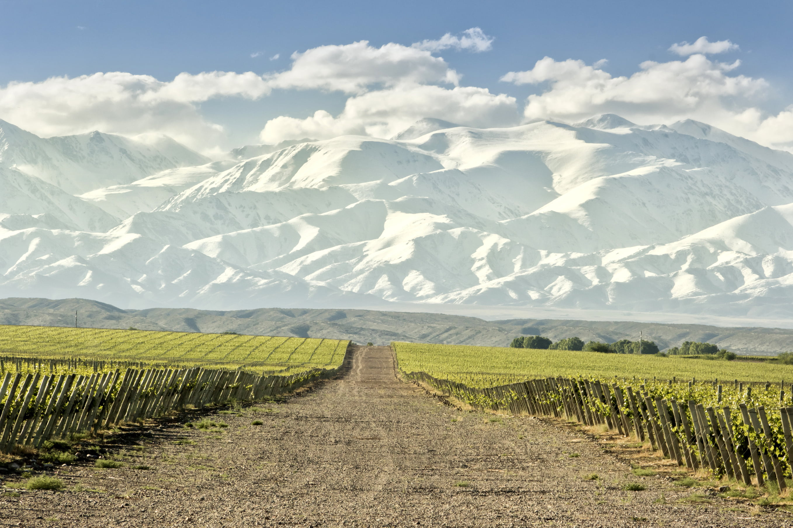

Province of Mendoza

Nestled in the foothills of the Andes Mountains, the Province of Mendoza is a captivating region in western Argentina known for its stunning landscapes, world-class wineries, and outdoor adventures. This picturesque province offers a perfect blend of natural beauty, cultural richness, and thrilling activities, making it a must-visit destination for travelers.
One of the main attractions of Mendoza is its renowned wine country. The province is the heart of Argentina's wine production, particularly famous for its Malbec wines. Visitors can explore the numerous vineyards and wineries that dot the region, enjoying wine tastings, tours, and gourmet dining experiences. The scenic vineyards, set against the backdrop of the majestic Andes, provide a serene and enchanting atmosphere for wine enthusiasts and casual visitors alike.
Mendoza is also a paradise for outdoor enthusiasts. The province boasts a diverse range of landscapes, from lush valleys and fertile plains to rugged mountains and arid deserts. The Andes Mountains offer a plethora of activities, including hiking, mountain biking, and horseback riding. One of the highlights is the Aconcagua Provincial Park, home to Mount Aconcagua, the highest peak in the Americas. Adventurers can embark on challenging treks to the summit or enjoy more leisurely hikes in the surrounding areas.
For those seeking relaxation, Mendoza's natural hot springs provide a perfect retreat. The thermal baths, located in picturesque settings, offer a soothing experience amidst nature's tranquility. Additionally, the province's rivers and lakes are ideal for water sports such as rafting, kayaking, and fishing.
Mendoza's cultural scene is equally vibrant, with a rich history and a variety of festivals and events throughout the year. The annual Vendimia Festival, celebrating the grape harvest, is a highlight, featuring parades, music, and traditional dances. The province's museums, art galleries, and historic sites offer a glimpse into its cultural heritage and artistic expression.
Whether you're a wine lover, an adventure seeker, or simply looking to immerse yourself in the natural beauty and culture of Argentina, the Province of Mendoza promises an unforgettable experience.